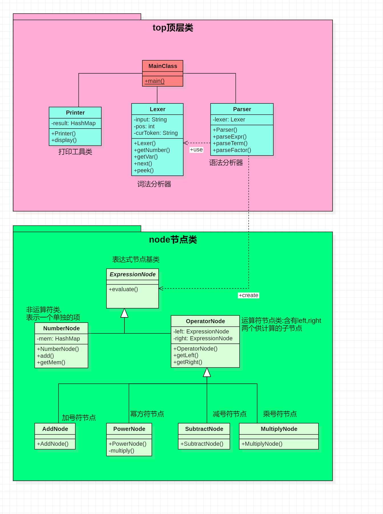

面向对象设计第一次作业及评测机思路
本文最后更新于 2025年3月18日 晚上
结构分析
- 表达式 = 项 +|- 项 +|- ...
- 项 = 因子 * 因子 * ...
- 因子有三种:
- 常数因子: +|- 常数
- 表达式因子: +|- (...) ["^" 常数]
- 变量因子: +|- x ["^" 常数]
功能实现
本次代码基于训练题给出的代码框架进行增添完善,主要增加实现的功能为:
- 增加对变量因子和表达式因子的识别,加强对部分符号如"x","(",")","^"等的处理.
- 修改
Parser的parseExpr等方法,处理好正负号的潜在问题. - 构造
ExpressionNode类,构建结点树来表达字符串,并提供evaluate()接口对表达式进行计算. - 构造
Printer类,提供printExpr方法,对结点树的计算结果(以HashMap为呈现形式)转换为字符串,并打印.
代码思路
 ## 词法分析器Lexer
词法分析器的主要函数包含getNumber/Var(),next(),peek().
其中的重要参数为curToken和pos,curToken表示即将进入处理序列的字符,可以通过peek()方法获取,pos表示当前待处理的因子的起始位置,getNumber/Var()被调用时会从pos位置开始接受数字/变量
解析器Parser
解析器用于将输入的数据转化为所需要的数据结构(这里我们用的是HashMap作为数据结构).其方法包括parseExpr(),parseTerm(),parseFactor()
对于正负号的处理
根据题目要求,我们可以构造一些极端的样例,例如++-3,--(+-9).这类正负号叠加使用的情况要求程序能够细化对符号的处理.
根据规则,每个正负号都有各自的归属,例如:++-3,第一个+置于表达式中,赋给第一个项;第二个+置于项中,赋给第一个因子;第三个-置于因子中,表示-3.因此,我们可以在parseExpr和parseTerm新增代码.parseExpr()中,我们在调用parseTerm()之前先判断是否存在负号.如果存在,则设置一个存储-1的常数节点,再调用parseTerm()得到存储项的节点,由这两个节点相乘得到一个乘法节点,然后返回这个乘法节点.parseTerm()同理.
另外,我们在parseNumber()中加入对正负号和前导零的处理逻辑,这比较简单,不做赘述.
评测机搭建思路
评测机功能
- 利用
Random随机生成符合题目要求的表达式. - 利用
Python中的sympy包对表达式进行消去括号和化简的操作,获得标准结果. - 利用
sympy判断用户程序输出结果与标准结果进行比较,判断输出是否通过测试. - 依据长度大小,给用户输出结果进行性能分的评估
改进思路
正则表达式实现
parseNumber()改为正则表达式